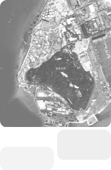

- Home
- Greetings
Our knowledge-information society is rapidly advancing in the 21st century. Residents administrative demands and desire to participate are dramatically increasing with the development of local autonomy and decentralization. The development of human resources and special skills, along with a number of changes in autonomous administration, are needed to lead the localization age.
International relations and cooperation continue to grow, such as with the establishment of theFree Economic Zone Authority for the realization of a business hub city in Northeastern Asia.
The global awareness and competitiveness of local our public officials is imperative.
Human Resources Delevelopment Center is striving to develop and utilize skills to cope with the
rapidly changing administrative environment. The institute serves all of Incheon’s 10,000
public officials.
It provides a learning service for language and information.
Its cyber-training center creates an environment of self-initiative, making education available
in the right places at the right time. Public officials and citizens in general are able to benefit.
Incheon’s success in becoming the gateway city to Northeastern Asia lies in our city’s people
A rich variety of learning tools and resources will be provided to ensure that both
public officials and citizens in general enjoy on-going and lifelong education opportunity.
Your encouragement and interest is very much appreciated.
Very best regards
President Kim Tae Bok